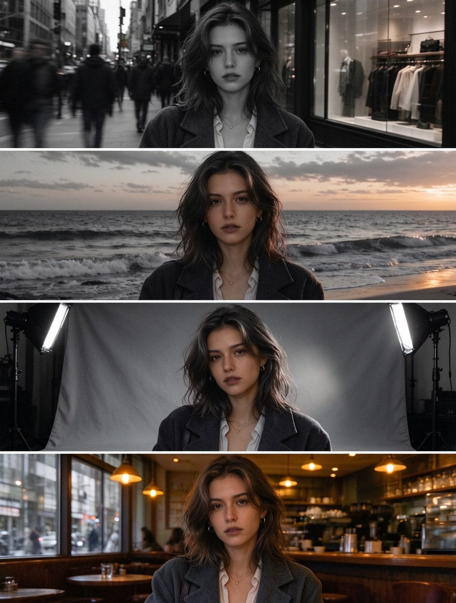
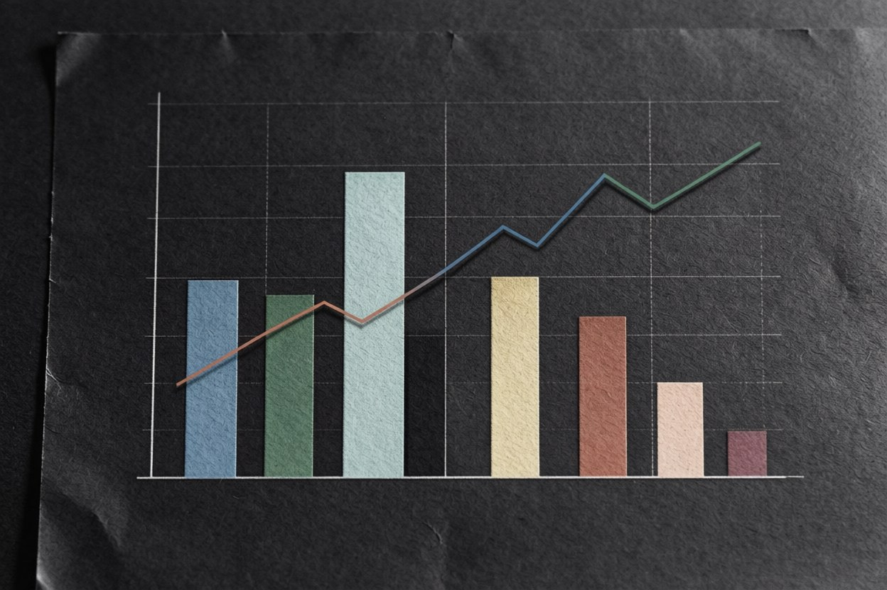

Nano Banana 2.1
Google's newest image model, built for fast generation and multi-turn editing with character and product consistency.
Type a prompt or upload up to 10 reference images — it runs right in your browser, no app, no install.
10 free credits on sign-up · Output at 1K, 2K, or 4K
Switch models at any time without re-uploading your files.
More Ways to Handle Text in Images
Copy text out of an image, erase text from it, or take watermarks off your photos — every PixPurge tool runs on the same one-click flow.
What Is Nano Banana 2.1?
Nano Banana 2.1 is Google's latest image generation and editing model, and the newest member of the Nano Banana line. It is a Flash-class model, built to be fast and cheap to run. Google positions it as the more efficient counterpart to Nano Banana Pro. The model card describes it as delivering significant improvements over Nano Banana 2 in visual quality, prompt adherence, multi-turn character consistency, and text rendering.
In practice it does two jobs in one place: generating images from a text prompt, and editing images you upload by describing the change you want. It handles 1K, 2K, and 4K output, takes up to 10 reference images at once, and supports search grounding, so it can pull current visual context instead of relying only on what it learned during training.
Key Features of Nano Banana 2.1

Consistent Characters and Products
Up to 10 reference images per request, covering character consistency for up to 4 characters and object fidelity for up to 10 objects, in a single generation. That limit is what makes series work possible: the same person across a whole campaign, the same product across a whole catalog. Google's model card puts product consistency at 1024 for this model against 965 for Nano Banana Pro, and it is the single biggest improvement over the previous generation.
Multiple References and Prompt Adherence
The model is built for multi-image fusion, combining several references into one coherent output instead of picking one and ignoring the rest. Instruction following is configurable through thinking levels: minimal, medium as the default, and high. Higher levels trade a little speed for better adherence on complicated prompts. Search grounding is available when the image has to reflect something current.


Edit with Simple Text Instructions
Upload an image, then say what to change. "Move the shoot to a rooftop at dusk." "Swap the label to matte black." "Take the phone out of her hand." Edits happen conversationally. Each instruction builds on the previous result, so you refine in steps instead of restarting.
Detailed Images up to 4K
Output renders at 1K, which is the default, or at 2K and 4K. Wide and panoramic aspect ratios at 1:4, 4:1, 1:8, and 8:1 no longer show the tiling artifacts that used to break large-format wide images at the higher resolutions.


Clear, Readable Text Inside Images
Text rendering and infographic layout accuracy both improved in this version. Posters, labels, price cards, and diagrams come out readable, including localized text across several languages. On Google's own infographic factuality benchmark the model scores 0.521 at the thinking setting, against 0.179 for Nano Banana 2. Nearly three times the score, and a difference you can see when a chart has to be right.
How the Models Compare
Google's model card (October 2026) reports the following scores. Higher is better for the preference and capability rows; the factuality row is a 0 to 1 score.
| Benchmark | Nano Banana 2.1 | Nano Banana 2 | Nano Banana Pro |
|---|---|---|---|
| Overall preference | 1050 | 990 | 935 |
| Infographic design | 1048 | 961 | 912 |
| Infographic factuality | 0.521 | 0.179 | 0.265 |
| Multi-character consistency | 1106 | 978 | 1011 |
| Product consistency | 1024 | 955 | 965 |
| Mask and ink-based editing | 1049 | 965 | 927 |
Nano Banana Pro keeps one advantage: it is built for the heaviest single-image renders, where speed does not matter.
How to Use Nano Banana 2.1
Add a prompt and reference images
Type what you want, or upload up to 10 reference images when a specific face, product, or character has to appear. Text and images can be mixed freely in the same request.
Choose resolution and aspect ratio
1K for drafts, 2K for web, 4K for print, with the frame that matches where the image will be used.
Generate, refine, download
Look at the result, describe the next change in plain language, and keep going in the same conversation. Download at your chosen resolution when it is right.
Which Reference Images Work Best
The quality of the reference images decides how consistent the output will be. Three things matter most. A clear front-facing photo with even lighting works better than a dramatic one. Several photos of the same person beat a single photo, because the model picks up more angles to work from. Product shots work best on a white or clean background, since a busy background tends to follow the product into the result.
Ten images is the ceiling per request, with up to 4 characters and up to 10 objects inside that limit. Anything past the limit is ignored rather than queued.
Nano Banana 2.1 vs Nano Banana 2
2.1 is the newer model and the one to reach for first: better visual quality, better adherence, stronger multi-character consistency, and sharper text. Nano Banana 2 remains available and is still a solid, fast choice for simple one-off generations where consistency across a set does not matter.
Full comparison: Nano Banana 2.1 vs Nano Banana 2
Nano Banana 2.1 vs Nano Banana Pro
2.1 is the efficient model and Pro is the heavier one. 2.1 is faster and cheaper per image, and it now leads Pro on overall preference, multi-character consistency, general editing, mask-based editing, stylization, and multi-reference editing. Pro remains the pick for the highest-fidelity single-image renders where speed is not a concern.
Full comparison: Nano Banana 2.1 vs Nano Banana Pro
Best Use Cases for Nano Banana 2.1
These are the three jobs where the same face or the same object has to survive across many images: a week of posts with one character, a product line shot in different settings, a comic where the cast stays recognisable.
Work where short text has to be spelled correctly and legible inside the artwork, plus restyling existing photos into illustration and running one brand reference into every format.
Prompt Examples
Ready-to-run prompts for portraits, products, posters, and character sheets, each with the reference setup that produced it.


Known Limitations of Nano Banana 2.1
We list what the model does badly, because you will find out anyway. These come from Google's own model card, not from our testing alone.
Poor rendering of small text, which is often blurry at 1K, along with long paragraphs and full-page layouts.
Character consistency is not always perfect between the input images and the generated output.
Masked and doodle-based editing follows instructions only partly, and ink can persist in the result.
In rare cases the subject's pose from the input image is retained in the output.
Occasional confusion around spatial localisation, left and right among them.
World knowledge, 3D reasoning, and factuality remain limited.
Occasional slowness or timeout issues. Hallucinated detail is a general risk with models of this kind.
If your job depends on long body copy inside the image, or on exact left and right placement, plan for a manual check first, or use a different tool for that part.
Frequently Asked Questions About Nano Banana 2.1
Try Nano Banana 2.1 Now
Type a prompt or upload a reference image and see the first result in seconds. Switch models at any time without re-uploading your files.
Try Nano Banana 2.110 free credits · Output at 1K, 2K, or 4K
Nano Banana is a product name of Google. PixPurge is an independent product and is not affiliated with, endorsed by, or sponsored by Google.